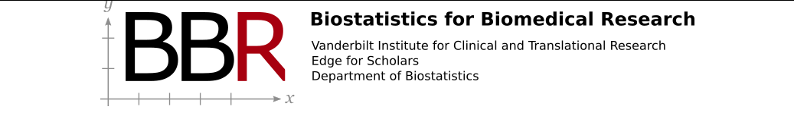

Biostatistics for Biomedical Research

flowchart LR Q[Research<br>Question] --> M[Measurements] --> D[Design] --> Ac[Data<br>Acquisition] --> Des[Description] --> A[Analysis] --> I[Interpretation] & Pred[Prediction] Pred --> V[Validation] I --> K[New Knowledge] & Dec[Decisions]
Preface
The book is aimed at exposing biomedical researchers to modern biostatistical methods and statistical graphics, highlighting those methods that make fewer assumptions, including nonparametric statistics and robust statistical measures. In addition to covering traditional estimation and inferential techniques, the course contrasts those with the Bayesian approach, and also includes several components that have been increasingly important in the past few years, such as challenges of high-dimensional data analysis, modeling for observational treatment comparisons, analysis of differential treatment effect (heterogeneity of treatment effect), statistical methods for biomarker research, medical diagnostic research, and methods for reproducible research. A glossary of statistical terms for non-statisticians is here. R Workflow is a useful companion to this book, especially for those needing to manipulate data in preparation for analysis and for those interested in embedding statistical analyses in state-of-the-art reproducible reports.
BBR addresses many of the common errors made in study design and analysis, such as the following.
- Using hypothesis tests for pilot and other small studies
- Large p-values convey no information in this setting
- Estimation is more appropriate than testing for pilot studies
- Instead use confidence limits, which are valid for all sample sizes
- Instead of power calculations report the likely margin of error in estimating the main quantity of interest (see Sample Size for a Given Precision, Sample Size for a Given Precision, Sizing a Pilot Study)
- Using hoped-for effects or effect sizes observed in other studies when doing power calculations
- Power calculations should always use the minimum effect you don’t want to miss
- This effect size is driven by biomedical knowledge, not anyone’s data or expectation of results
- Using a low-information response variable
- These require large sample sizes
- Categorizing continuous or ordinal variables (see #sec-info)
- This results in a huge loss of power and a great reduction in the effective sample size
- Example: Dichotomizing a variable at the median makes the effective sample size about \(\frac{2}{3}n\)
- Dichotomizing farther from the median makes matters even worse. For example the effective sample size for a binary response that is 0.1 prevalent is \(3np(1-p)\) where \(p=0.1\), which is \(0.27n\). I.e. more than \(\frac{2}{3}\) of the sample’s information is discarded by binning the original measurement.
- Using non-descriptive descriptive statistics (see 4 Descriptive Statistics, Distributions, and Graphics)
- Using the data to select which predictors to include in a regression model, i.e., using stepwise regression or univariable screening
Symbols Used in the Right Margin of the Text
- Blue symbols in the right margin starting with ABD designate section numbers (and occasionally page numbers preceeded by \(p\)) in The Analysis of Biological Data, Second Edition by MC Whitlock and D Schluter, Greenwood Village CO, Roberts and Company, 2015.
- Right blue symbols starting with RMS designate section numbers in Regression Modeling Strategies, 2nd ed. by FE Harrell, Springer, 2015.
 in the right margin is a hyperlink to a YouTube video related to the subject.
in the right margin is a hyperlink to a YouTube video related to the subject. is a hyperlink to the discussion topic in
is a hyperlink to the discussion topic in datamethods.orgdevoted to the specificYouTubevideo session. You can go directly to the discussion about sessionnby going tobit.ly/datamethods-bbrn. Some of the sessions onYouTubealso had live chat which you can select to replay while watching the video.- Boxed blue text in the right margin represents a mnemonic key for linking to discussions about that section in datamethods. Anyone starting a new discussion about a topic related to the section should include the mnemonic somewhere in the posting. When you click on the blue boxed text the
datamethodssearch result of all topics containing that mnemonic will appear, and the user can navigate from it to the topic of interest to read or add content. - An audio player symbol indicates that narration elaborating on the notes is available for the section. Red letters and numbers in the right margin are cues referred to within the audio recordings.
- blog in the right margin is a link to a blog entry that further discusses the topic.
For information about adding annotations, comments, and questions inside the text click here: Comments
Other Information
- BBR course
- YouTube channel
BBRcoursefor these notes - Discussion board about the overall course
- Go directly to a YouTube video for BBR Session
nby going tobit.ly/yt-bbrn - Glossary of statistical terms
- Datamethods discussion board
- Statistical papers written for clinical researchers
- Statistical Thinking blog
- Statistical Thinking News
Acknowledgement
This material grew largely out of teaching clinical scholars and in Master of Science in Clinical Investigation programs at Duke University, University of Virginia, and Vanderbilt University. I benefitted immensely from lecture notes from colleagues such as Kerry Lee of Duke University. Thanks also goes to Vanderbilt Biostatistics colleague James C. Slaughter who made several contributions to an earlier version of the book at hbiostat.org/bbrc/bbr.pdf.
| Date | Sections | Changes | Thanks To |
|---|---|---|---|
| 2026-07-14 | Summary | Added link to RCT Workbench | |
| 2026-05-21 | Preface | Added a list of most common study design and analysis errors and links to methods to prevent them | |
| 2025-04-07 | Bayesian SAP | New subsection on Bayesian SAPs for ANCOVA | |
| 2024-08-06 | 17 Modeling for Observational Treatment Comparisons | New overview of chapter, made a few additions throughout | |
| 2024-04-16 | KCCQ Ceiling Effect | New subsection on KCCQ ceiling effect problem | |
| 2024-04-16 | Nearly Optimal Statistical Model | New subsection on optimal model to replace change score | |
| 2023-11-10 | Regression Analysis of Paired Data | Fixed mixed effects ordinal model for paired rank test by using quadrature | |
| 2023-09-22 | One-at-a-Time Bootstrap Feature Selection | New section on bootstrapping importantance ranks using one-at-a-time feature modeling | |
| 2023-09-16 | Sample Size to Estimate a Correlation Matrix | New section on estimation of correlation matrices | |
| 2023-07-28 | Regression Analysis of Paired Data | New section on using models for paired data | |
| 2023-07-26 | Two-Way ANOVA Ordinal Regression Example | Added example of ordinal model for 2-way ANOVA | |
| 2023-06-22 | 13 Analysis of Covariance in Randomized Studies | Added big picture | |
| 2023-06-16 | How Many Covariables to Use? | Added more to section on how many covariates to add | |
| 2023-04-27 | Sample Size Requirement for Characterizing Entire Distributions | New section on sample size for ECDF | |
| 2023-04-05 | Example of a Misleading Change Score | Added confidence bands | |
| 2023-03-30 | Simulation To Understand Needed Sample Sizes | Fixed bug in simulation graphics | |
| 2023-03-29 | Statistical Scientific Method | New link to clinical trial design resource | |
| 2023-03-13 | 21 Reproducible Research | New subsection on the decline effect | |
| 2023-02-19 | Probability | Added link to resources for learning probability | |
| 2022-12-29 | Graphs for Describing Statistical Model Fits | Added single-axis nomogram example | |
| 2022-12-28 | Started to add old study questions to end of selected chapters | ||
| 2022-12-03 | Example of a Misleading Change Score | New section with real example of misleading change score | |
| 2022-11-27 | Current Status vs. Change | New section on importance of current status vs. baseline status and irrelevance of change for patients | |
| 2022-08-02 | 19 Diagnosis | Quote about weaknesses in sens and spec; link to CrossValidated discussion | |
| 2022-08-31 | Sample Size for r | New material on sample size vs. P(correct sign on r) |